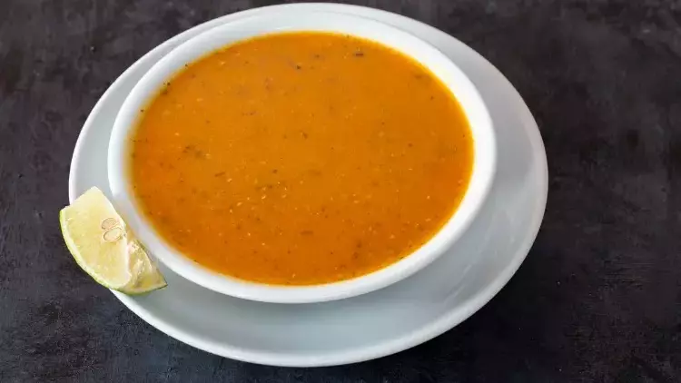
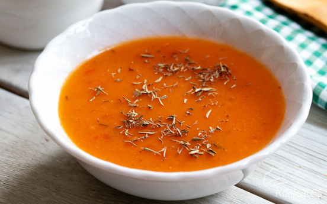
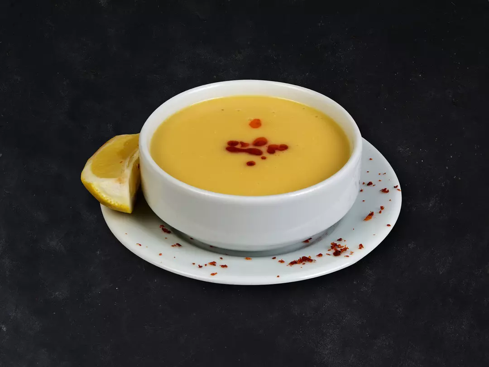
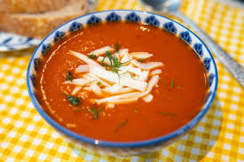
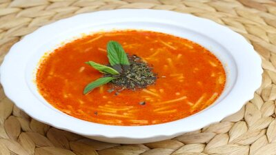
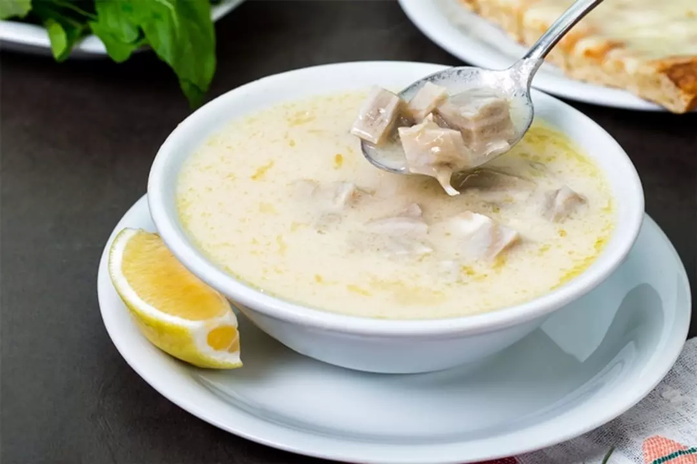
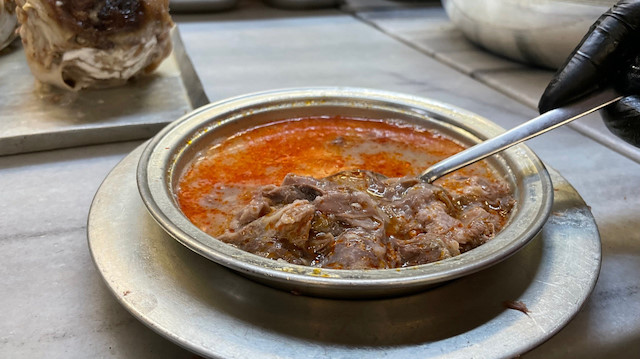
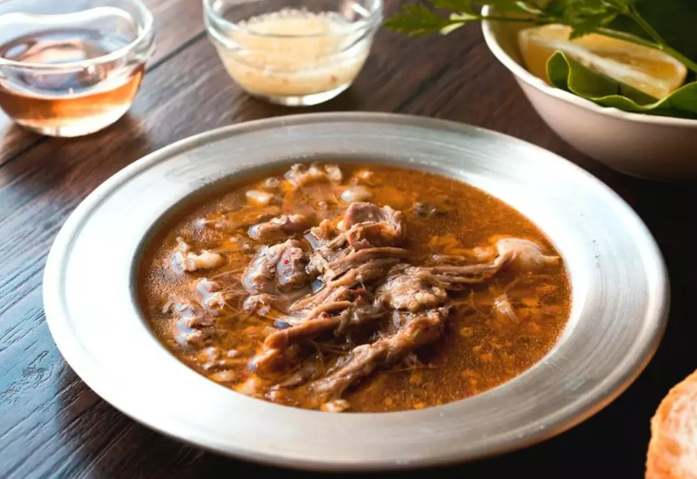

Ezogelin Çorbası, Türk mutfağının sevilen ve geleneksel çorbalarından
biridir. Adını, Gaziantep'e ait efsanevi bir kadın olan Ezo Gelin'den
alır. Efsaneye göre, Ezo Gelin, yaptığı bu çorbayla tanınmış ve zamanla
bu lezzet "Ezogelin Çorbası" olarak anılmaya başlanmıştır. Çorbanın ana
malzemeleri kırmızı mercimek, bulgur, pirinç, soğan, sarımsak ve
baharatlardır. Özellikle kış aylarında tercih edilen bu çorba, hem
besleyici hem de lezzetli olup, üzerine limon ve nane eklenerek servis
edilir. Ezogelin Çorbası, Türk mutfağının vazgeçilmez yemeklerinden
biridir ve sofralarda sıklıkla yer alır.
Malzemeler
1 yemek kaşığı sıvı yağ
1 yemek kaşığı tereyağı
1 adet kuru soğan
2 diş sarımsak
1 su bardağı kırmızı mercimek
1 kahve fincanı bulgur (4 yemek kaşığı)
Yarım kahve fincanı pirinç (2 yemek kaşığı)
6 su bardağı sıcak su + 2,5 su bardağı sıcak su
Sosu İçin
2 yemek kaşığı sıvı yağ
1 yemek kaşığı un
2 yemek kaşığı domates salçası
2 su bardağı sıcak su
1 Tatlı kaşığı nane
1 çay kaşığı kırmızı pul biber
1 çay kaşığı karabiber
1,5 tatlı kaşığı kadar tuz
Tarif
Tencereye tereyağı ve 1 yemek kaşığı sıvı yağ tencereye alınarak
ısıtılır.
Soğan ve sarımsak küçük küçük doğranır ve tencerede orta ateşte,
soğanlar diriliğini kaybedinceye kadar kavrulur. Dilerseniz
sarımsakları rendeleyerek de kullanabilirsiniz.
Üzerine yıkanmış ve suyu süzülmüş olan kırmızı mercimek, pirinç
ve bulgur eklenerek karıştırılır ve kavrulur.
Üzerine sıcak su ilave edilerek tencerenin kapağı kapatılır ve
pişmeye bırakılır. Çorba kaynayana kadar yüksek ateşte
kaynadıktan sonra kısık ateşte ara ara karıştırılır.
Bakliyatlar yumuşayınca kadar yaklaşık 35 dakika pişirilir ve
ocak kapatılır.
Ayrı bir yerde 2 yemek kaşığı sıvı yağ ısıtılır.
1 yemek kaşığı un eklenir ve unun kokusu çıkana kadar
karıştırılarak kavrulur.
Üzerine 2 yemek kaşığı domates salçası eklenir, 1-2 dakika daha
kavrulur.
Salça da kavrulduktan sonra 2 su bardağı kadar su ilave edilerek
kaynatılır.
Nane, kırmızı biber, karabiber ilave edilerek hazırlanan sos
ocaktan alınır ve çorbaya ilave edilir.
Tuzu da eklenerek 1-2 dakika kaynatılır. Bu aşamada gerek
duyarsanız sıcak su ekleyebilirsiniz. Ben 2,5 su bardağı kadar
sıcak su ekledim ancak siz çorbanızın kıvamına göre
ayarlayabilirsiniz.
Yaklaşık 5 dakika daha kaynattıktan sonra Ezogelin Çorbamız
servise hazır. Afiyet olsun.
Yemek Fotoğrafı

Yemek Videosu
Tarhana Çorbası
Tarhana Çorbası, Türk mutfağının geleneksel ve köklü çorbalarından
biridir. Yoğurt, un, buğday, sebzeler ve baharatların fermente edilip
kurutulmasıyla yapılan tarhana, suyla açılarak çorba haline getirilir.
Tarihi, Türklerin Orta Asya'dan Anadolu'ya göç ettikleri döneme kadar
uzanır ve özellikle kış aylarında enerji verici ve bağışıklık
güçlendirici özelliğiyle tercih edilmiştir. Yüzyıllardır yapılan bu
çorba, hem pratik hem de besleyici bir gıda maddesi olarak Anadolu'nun
kırsal bölgelerinde ve yöresel mutfaklarda büyük öneme sahiptir.
Malzemeler
3 yemek kaşığı Ev Tarhanası
1 Yemek Kaşığı Nane
2 Yemek Kaşığı Sıvı Yağ
1 Yemek Kaşığı Salça
6 Su Bardağı Su
Kırmızı Pul Biber
Karabiber
Tuz
Tarif
Tenceremizin içerisine sıvı yağ, nane, salça, baharatlar ve
tarhanayı ekleyip biraz karıştırarak kavuruyoruz. Dilerseniz
tereyağı da kullanabilirsiniz.( Veya tarhanayı suyu ekledikten
sonra ekleyip çırpıcı ile karıştırabilirsiniz. böylelikle
topaklanma ihtimali azalır.)
Suyu yavaş yavaş ilave ediyoruz ve devamlı karıştırarak
pişiriyoruz. Topaklanmaması için tel çırpıcı ile
karıştırabilirsiniz. (kaynayana kadar karıştırarak pişirelim.)
Kaynadıktan sonra 5 dk daha bekleyip ocaktan alıyoruz,
çorbamızı… Afiyet olsun.
Yemek Fotoğrafı

Yemek Videosu
Mercimek Çorbası
Mercimek Çorbası, Türk mutfağının en sevilen ve yaygın çorbalarından
biridir. Kırmızı mercimek, soğan, havuç gibi malzemelerle yapılan bu
çorba, hem besleyici hem de kolayca hazırlanabilir. Osmanlı
İmparatorluğu'ndan günümüze kadar, özellikle kış aylarında sıkça
tüketilen Mercimek Çorbası, Anadolu'nun her köyünde yetişen mercimekle
yapılması nedeniyle yaygın bir yemek olmuştur. Genellikle sade bir
şekilde hazırlansa da, baharatlar ve limon ile zenginleştirilerek
lezzetli bir hale gelir.
Malzemeler
2 Su Bardağı Kırmızı Mercimek
1 Adet Soğan
2 Yemek Kaşığı Un
1 Adet Havuç
Yarım yemek kaşığı biber ya da domates salçası (rengi kırmızı
olsun isterseniz artırabilir ya da hiç kullanmayabilirsiniz)
1 Tatlı Kaşığı Tuz
Yarım Çay Kaşığı Karabiber
1 çay kaşığı kimyon (isteğe bağlı)
2 Litre Sıcak Su
5 Yemek Kaşığı Sıvı Yağ
Sosu İçin
2 yemek kaşığı sıvı yağ
1 yemek kaşığı un
Tarif
Kırmızı mercimek çorbası için sıvı yağı tencereye alınarak
yemeklik doğranan soğanlar hafif pembeleşinceye kadar kavrulur.
Daha sonra un ilave edilerek kısık ateşte kavurmaya devam
edilir.
Salça kullanılacak ise salça ilave edilir, kavrulduktan sonra
küp küp doğranmış havuç ve iyice yıkanıp suyu süzülen
mercimekler ilave edilir.
Üzerine su eklenip karıştırılır, tencere kapağı kapatılır. Çorba
kaynayana kadar orta ateşte, ardından mercimekler ve havuçlar
yumuşayana kadar kısık ateşte pişirilir.
Çorba piştikten sonra el blenderı ile güzelce ezilir. Eğer
blenderiniz yoksa süzgeçten de geçirebilirsiniz.
Karabiber, tuz ve isteğe bağlı olarak kimyon eklenir ve
karıştırılır. 5 dakika daha pişirilerek ocaktan alınır.
Kıvamı koyu gelirse size, bir miktar su ilave edilerek bir taşım
kaynatılır.
Bu arada küçük bir tavaya iki yemek kaşığı tereyağı alınır,
kızdırılır ve bir tatlı kaşığı kırmızı toz biber eklenerek
ocaktan alınır.
Mercimek çorbası servis kasesine alındıktan sonra üzerine
kırmızı biberli sos gezdirilir ve bir dilim limon ile servis
edilir.
Yemek Fotoğrafı

Yemek Videosu
Domates Çorbası
Domates Çorbası, Türk mutfağının en sevilen ve yaygın çorbalarından
biridir. Tarihi, domatesin 16. yüzyılda Avrupa'ya gelmesiyle başlar ve
zamanla Osmanlı İmparatorluğu'na da ulaşarak mutfaklarda yerini
almıştır. Türk mutfağında, domatesin taze ya da salça olarak
kullanıldığı, özellikle yaz ve kış aylarında tüketilen bu çorba,
domatesin asidik yapısı ve baharatlarla zenginleşen lezzetiyle öne
çıkar. Genellikle üzerine krema veya tereyağı eklenerek servis edilir ve
sade, besleyici bir yemek alternatifi sunar. Domates Çorbası, hem kolay
hazırlanabilir hem de hafif ve doyurucu bir seçenek olarak sofralarda
sıkça yer alır.
Malzemeler
5 Adet Olgun Domates
2 Yemek Kaşığı Tereyağı
3 Yemek Kaşığı Un
1 Litre Sıcak Su
1 Su Bardağı Süt
Kırmızı Pul Biber
Karabiber
Tuz
Üzeri İçin
Rendelenmiş Taze Kaşar
Tarif
Domates çorbası yapmak için öncelikle domateslerin kabuğu ince
bir şekilde soyulur ve ikiye kesilip rondodan geçirilir.
Dilerseniz domatesleri rendeleyebilir ya da 2 su bardağı kadar
domates sosu kullanabilirsiniz.
Uygun bir tencerede tereyağı eritilir. Üzerine un eklenerek
karıştırılır ve 1-2 dakika hafifçe kavrulur. Ocağı yüksek ateşte
açarak unu yakmamaya dikkat etmelisiniz.
Ardından rondodan geçirilen domatesler bu karışıma ilave edilir,
birkaç dakika karıştırılarak kavrulur.
Ara verilmeden 1 litre kadar su ilave edilip karıştırma işlemini
sürdürülür. 15 dakika bu şekilde kaynatılır.
Daha sonra süt ilave edilip birkaç dakika daha kaynatılır. Tuzu
ilave edilip karıştırılır ve ocaktan alınır. Sütün oda
sıcaklığında olmasına dikkat etmelisiniz.
Arzuya göre servis yaparken üzerine kaşar peyniri rendesi ilave
edilir. Domates çorbamız servise hazır, afiyet olsun.
Yemek Fotoğrafı

Yemek Videosu
Şehriye Çorbası
Şehriye Çorbası, Türk mutfağının geleneksel ve hafif çorbalarından
biridir. Tarihçesi tam olarak belirlenemese de, Osmanlı
İmparatorluğu'ndan günümüze kadar çeşitli şehriye türlerinin
kullanıldığı çorbalar Türk mutfağında yaygındır. Şehriye, ince, küçük
makarnalar olarak bilinir ve özellikle kış aylarında besleyici ve pratik
bir çorba olarak tercih edilir. Genellikle tavuk suyu veya et suyu ile
yapılan bu çorba, üzerine biraz limon ve baharat eklenerek
zenginleştirilir. Şehriye Çorbası, sade yapısıyla hızlıca hazırlanabilir
ve hafifliğiyle birçok kişi tarafından sevilen bir çorba olarak
sofralarda yer alır.
Malzemeler
3 Yemek Kaşığı Sıvı Yağ
2 Yemek Kaşığı Domates Salçası
1 Çay Kaşığı Pul Biber
1 Tatlı Kaşığı Nane
1 Silme Tatlı Kaşığı Tuz
6 Su Bardağı Sıcak Su
Yarım Çay Kaşığı Karabiber
1 Çay Bardağı Arpa Şehriye
Tarif
Uygun bir tencere içerisine sıvı yağı alalım. Bu aşamada
dilerseniz tereyağı da ilave edebilirsiniz.
Yağımızın üzerine salçamızı ilave edelim ve orta ateşte salçanın
kokusu çıkana kadar bir kaç dakika kavuralım.
Üzerine pul biber, nane ve tuzu ilave ederek karıştıralım.
Üzerine su eklenip karıştırılır, tencere kapağı kapatılır. Çorba
kaynayana kadar orta ateşte, ardından mercimekler ve havuçlar
yumuşayana kadar kısık ateşte pişirilir.
Ardından suyumuzu da ekleyip karıştırarak kapağını yarı açık
olacak şekilde kapatalım ve çorbamızı kaynamaya bırakalım.
Kaynadıktan sonra üzerine arpa şehriyeyi ilave edelim ve tekrar
karıştıralım.
Çorbamızı ara ara karıştırarak kısık ateşte 15-20 dakika pişmeye
bırakalım.
Şehriyeleri yumuşayan çorbamız servise hazır. Afiyet olsun.
Yemek Fotoğrafı

Yemek Videosu
Terbiyeli İşkembe Çorbası
İşkembe çorbası, Osmanlı İmparatorluğu dönemine dayanan uzun bir geçmişe
sahip olup, özellikle halk arasında sindirim sistemini rahatlatıcı
özelliğiyle bilinir. Geleneksel olarak koyun veya sığır işkembesi
kullanılarak yapılan bu çorba, sirke, sarımsak, et suyu ve baharatlarla
tatlandırılır. Aslında, işkembe çorbası, Osmanlı saray mutfağından halk
mutfağına geçmiş bir yemek olup, çeşitli bölgelerde özellikle kış
aylarında ve soğuk havalarda tüketilir. Besleyici ve doyurucu bir
özelliğe sahip olan işkembe çorbası, genellikle üzerine sirke ve
sarımsaklı sos eklenerek servis edilir, bazen de başta limon ve pul
biber olmak üzere ek malzemelerle tatlandırılır.
Malzemeler
1 Kilo İyi Temizlenmiş İşkembe
7 Diş Sarımsak
Yarım Çay Bardağı Sirke
1,5 Litre Su
4 Yemek Kaşığı Un
Sıvı Yağ
Terbiyesi İçin
2 Yemek Kaşığı Un
1 Yumurta Sarısı
2 Yemek Kaşığı Yoğurt
Yarım Limon Suyu
Tarif
İşkembeler bir saat sirkeli suda bekletilir, sonra küp şeklinde
doğranır.
45 dakika doğranan işkembeler düdüklü tencerede 1,5 litre suda
pişirilir.
Ayrı bir tencerede sıvı yağ ile 4 yemek kaşığı un kavrulur.
Haşladığımız işkembenin soğumuş suyunu kavrulan una
topaklanmaması için azar azar yedirilerek konur.
İşkembeler bu karışıma dökülür, kaynatılır.
15 dakika kaynatılan işkembeye arzu edilen miktarda sarımsak
dövülür ve sirke ile birlikte çorbaya konur.
Çorbayı ocaktan almaya yakın terbiyesi hazırlanır.
Yumurta sarısı, yoğurt, limon suyu ve un çırpılır yavaş yavaş
çorbaya ilave edilir.
10 dakika daha kaynamaya bırakılır.
Servis yapacağınız çorbayı kırmızı pul biber ve karabiberle
süsleyip servise sunabilirsiniz.
Yemek Fotoğrafı

Yemek Videosu
Kelle Paça Çorbası
Kelle paça çorbası, Osmanlı İmparatorluğu'ndan günümüze uzanan köklü bir
geçmişe sahip olup, özellikle soğuk kış günlerinde besleyici ve sıcak
bir çorba olarak tercih edilmiştir. Kelle ve paça etlerinin
kaynatılmasıyla yapılan bu çorba, geleneksel olarak etin suyuyla
hazırlanır ve içine baharatlar, sirke ve sarımsak eklenir. Tarihsel
olarak, kelle paça çorbası özellikle besin değeri yüksek olduğu için
güçsüz düşen hastalar için önerilen bir yiyecek olmuştur. Bugün
Türkiye'nin çeşitli bölgelerinde, özellikle Adana, Gaziantep ve İstanbul
gibi şehirlerde popüler olarak tüketilen bu çorba, geleneksel olarak
yanında ekmek ve limonla servis edilir.
Malzemeler
1 Kilo Kelle Eti(Düdüklüde Haşlanıp Ayıklanmış)
2 Yumurta Sarısı
1 Yemek Kaşığı Tepeleme Un
4 Yemek Kaşığı Yoğurt
2 Diş Sarımsak
Yarım Limon Suyu
1 Yemek Kaşığı Tereyağı
1, 5 veya 2 litre su (yoğun bir tadı olsun isterseniz haşlama
suyundan da kullanabilirsiniz)
Tarif
Unu Tereyağında Kavurarak Çorbanın Yapımına Başlıyoruz.
Çırpma teli yardımıyla suyunu azar azar ilave edip kaynamaya
bırakıyoruz.
Bir kasenin içinde yumurta sarısı, limon suyu ve yoğurdu
çırpıyoruz.
Kaynayan sudan da bir kepçe ilave edip tencereye azar azar ve
çırparak döküyoruz.
Haşlanıp ayıklanmış kelle etini ve ezilmiş sarımsağı ilave edip
bir iki taşım kaynatıyoruz.
Son olarak tuzunu ilave ediyoruz. Ve lokantada içtiğiniz kelle
paçayı aratmayacak çorbanız hazır. Afiyet olsun.
Yemek Fotoğrafı

Yemek Videosu
Beyran Çorbası
Beyran Çorbası, özellikle Gaziantep mutfağına ait geleneksel bir
yemektir ve soğuk kış günlerinde sıklıkla tüketilir. Etli ve baharatlı
bir çorba olan beyran, genellikle kuzu eti, pirinç, sarımsak, biber
salçası, pul biber ve tuz ile hazırlanır. Yapımında kullanılan etin
özellikle kuzu kemiği olması, çorbaya zengin bir lezzet ve yoğunluk
katar. Tarihçesi, Gaziantep'e dayanan beyran, aslen sabah kahvaltısı
olarak tüketilse de günün her saati tercih edilir. Beyran'ın pişirilmesi
uzun zaman alır ve sonunda üzerine yoğurt ve limon sıkılarak servis
edilir. Bu çorba, hem besleyici hem de sıcak tutucu özelliği nedeniyle
kış aylarında oldukça popülerdir.
Malzemeler
1 kg kemikli kuzu gerdan
2 yemek kaşığı tereyağı
1 su bardağı pirinç
8-10 diş sarımsak
Yarım yemek kaşığı biber salçası
Tuz
Karabiber
8 su bardağı et suyu (haşlanan etin suyu)
Tarif
Et düdüklüye alınarak üzerini geçecek kadar su koyulup (su
miktarını çorbanın kıvamına göre kendiniz ayarlayınız)
haşlanıncaya kadar pişirilir.
Pişen etler süzülerek (suyunu atmayın) kemiklerinden ayrılır ve
ufak ufak parçalanır.
Etlerin suyu bir tencereye alınır ve İçerisine pirinçler
eklenir.
Pirinçler yumuşayana kadar pişirilir.
Daha sonra tereyağı, biber salçası, dövülmüş sarımsaklar, tuz ve
baharatlar ilave edilir.
Daha sonra haşlanmış etler de eklenir ve çorba kaynamaya
bırakılır.
Bir süre daha kaynadıktan sonra altı kapatılır.
Tereyağını çorbayı kaselere koyduktan sonra üstüne de
gezdirebilirsiniz.
Arzuya göre servis esnasında kıyılmış maydanoz serpebilirsiniz.
Yemek Fotoğrafı

Yemek Videosu
Tavuk Çorbası
Tavuk çorbası, Türk mutfağının eski ve yaygın tariflerinden biridir.
Besleyici ve hafif yapısıyla özellikle hastalık dönemlerinde veya soğuk
kış günlerinde tercih edilir. Tarihsel olarak, Osmanlı
İmparatorluğu'ndan günümüze kadar farklı şekillerde yapılmış olan tavuk
çorbası, pratik ve kolay hazırlanmasıyla da bilinir. Genellikle tavuk,
sebzeler (soğan, havuç, patates gibi) ve baharatlarla hazırlanır.
Çorbanın içinde bazen pirinç veya erişte de bulunur. Ayrıca, tavuk
etinin haşlanıp suyunun çıkarılmasıyla yapılan bu çorba, besin değerinin
yüksek olmasından dolayı hem sağlıklı hem de doyurucu bir öğün olarak
kabul edilir. Yoğurt veya limonla tatlandırılarak servis edilebilir.
Malzemeler
2 Adet Haşlanmış Tavuk Budu
3 Yemek kaşığı şehriye
2 Yemek kaşığı zeytinyağ
2 Yemek kaşığı yoğurt
1.5 Yemek kaşığı un
1 Adet yumurtanın sarısı
2 Diş rendelenmiş sarımsak
1/2 Limon(yarım)
1 Çay kaşığı karabiber
1 Tatlı kaşığı tuz
8-9 Su bardağı su (tavuğun kendi suyunu da kullanıyoruz)
Tarif
Önce tavukları haşlıyoruz.
Terbiyesini hazırlıyoruz un,yoğurt,yumurtayı bir kapta
çırpıyoruz
İçine yarım su bardağı su ilave edip iyice pütürsüz olacak
şekilde çırpıyoruz.
Haşlanmış tavuğun suyundan sıcak olarak içine üç kepçe kadar
alıp terbiyeyisine ilave edip iyice çırpıyoruz.
Çorbayı hazırlayacağım tencereye sıvı yağ ilave ediyoruz
şehriyeyi hafif rengi dönmeden kavuruyoruz.
Sarımsağı rendeleyip içine ilave ediyoruz suyunu ilave ediyoruz.
Parçalanmış tavukları ilave ediyoruz bir taşım hepsini
kaynatıyoruz.
Çorbanın içine terbiyesini ilave ediyoruz bir taşım
kaynatıyoruz.
İçine yarım sıkılmış limon suyunu ve tuzunu ilave ederek
çorbamızı bir taşım daha kaynatıyoruz. Kıvam alınca ocağı
kapatıyoruz.
Üzerine tereyağ ve kırmızı biber kavurup servise sunuyoruz.
Afiyetle.